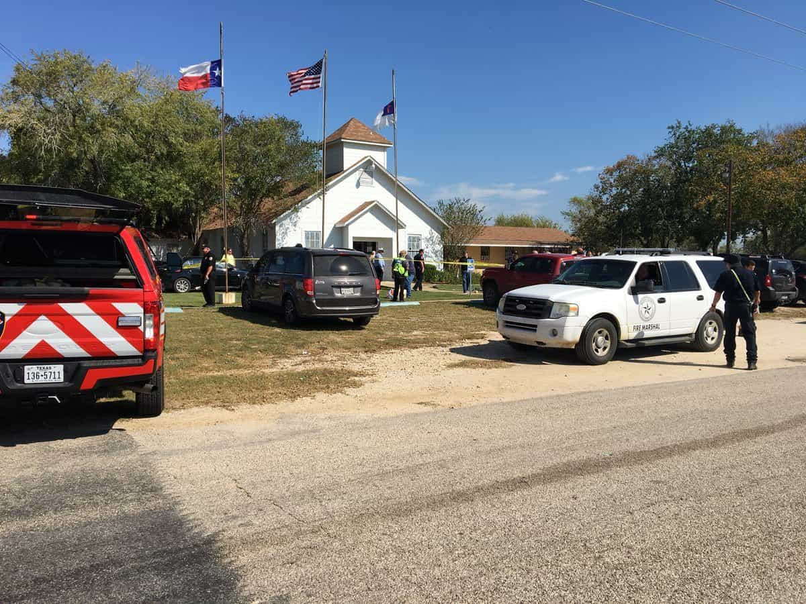

This account syndicates news from other media outlets.


5:40 p.m.
Gov. Greg Abbott says 26 people were killed in the attack on a Texas church and that it was the deadliest mass shooting in the state’s history.
Abbott’s remarks came during a news conference Sunday, hours after the attack on the First Baptist Church in Sutherland Springs, a community 30 miles southeast of San Antonio.
The victims ranged in age from 5 to 72 years old.
Two officials who spoke to The Associated Press on the condition of anonymity identified the attacker as Devin Kelley.
___
5:20 p.m.
Two officials have identified the suspect in a mass shooting at a Texas church as Devin Kelley.
The officials — one a U.S. official and the other in law enforcement — spoke to The Associated Press on the condition of anonymity because they weren’t authorized to discuss the ongoing investigation, which they were briefed on.
The U.S. official says Kelley lived in a suburb of San Antonio and that he doesn’t appear to be linked to organized terrorist groups. The official says investigators are looking at social media posts Kelley may have made in the days before Sunday’s attack, including one that appeared to show an AR-15 semiautomatic weapon.
Authorities say Kelley walked into the First Baptist Church in Sutherland Springs and opened fire, killing more than 20 people and wounding at least 10 others.
This item has been corrected to fix the spelling of Kelley on second reference.

___
5 p.m.
A congregant who wasn’t at a Texas church the day of a deadly shooting says his cousins attended and that family members have been told at least one was killed.
Thirty-four-year-old Nick Uhlig says he didn’t go to the Sutherland Springs church Sunday because he was out late Saturday. He says the cousin who was killed had three children and was pregnant with a fourth. He didn’t know specifics about how the other was doing.
Uhlig says the family had just met days earlier for his cousins’ grandfather’s funeral.
___
4:20 p.m.
The wife of the pastor of the First Baptist Church of Sutherland Springs says the couple’s 14-year-old daughter was among those killed in a mass shooting at the church.
Sherri Pomeroy, wife of Pastor Frank Pomeroy, said in a text message that she lost her daughter “and many friends” in the Sunday shooting. The text came in response to an interview request sent by The Associated Press to a phone number linked in online records to Frank Pomeroy.
Sherri Pomeroy says both she and her husband were out of town and trying to get back to Sutherland Springs, outside of San Antonio.
___
3:30 p.m.
A law enforcement official says more than 20 people have been killed in a shooting at a church in a small town outside San Antonio.
The official, who was briefed on the investigation, says the gunman fled the church in a vehicle after the shooting and was also killed, either by a self-inflicted wound or during a confrontation with police. The official was not authorized to discuss the ongoing investigation and spoke to The Associated Press on condition of anonymity.
The official says between 10 to 15 people were also injured but stressed the investigation was early and the figures could change. Authorities are still trying to determine a motive.
Federal law enforcement swarmed the scene to offer assistance, including ATF investigators and members of the FBI’s evidence collection team.
Don’t Miss: The Narrative Of A Shooting Can’t Be Formed Until The Media Knows All The Races Involved